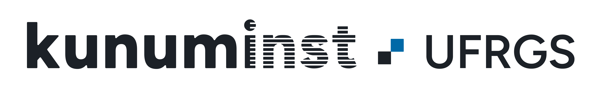
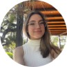
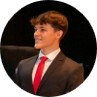

Sobre o Projeto
O objetivo principal do projeto é a obtenção de modelos de aprendizado por reforço de baixo custo em tarefas de domínio específico. Os objetivos específicos do projeto são:
- A concepção de algoritmos e estratégias de treinamento que possam aproveitar aspectos do compromisso entre eficiência amostral e custo computacional no treinamento de modelos de aprendizado por reforço.
- A avaliação da efetividade dos modelos, quando aplicados a problemas de controle com tempo de decisão variável, incluindo tempo real, e geração de conteúdo.
Parceria Institucional
Instituto de Informática (Inf-UFRGS)
O (INF/UFRGS) é uma instituição dedicada ao ensino superior, à produção de conhecimento e à pesquisa acadêmica.

Instituto Kunumi
Parceiro industrial e científico impulsionando o avanço de tecnologias emergentes e IA aplicada (COLABS).
Nosso time
Talentos que fazem a pesquisa acontecer
Anderson R. Tavares
Coordenador
Gabriel de Senne Amorim
Doutorado
Izaias Saturnino de Lima Neto
Mestrado

Deborah Ferreira Ribeiro
Graduação

Pedro Muller Legnaghi
Graduação
Lucas N. Alegre
Vice-Coordenador
Anderson G. A. C. Filho
Mestrado
João Augusto Tonial Laner
Mestrado

Luís Filipe Santos de Moura
Graduação
Luiza Helwig da Silva
Graduação
Publicações e Resultados
Título do Artigo Científico ou Relatório Técnico
Autores do Projeto • Nome da Conferência ou Periódico (Ano)